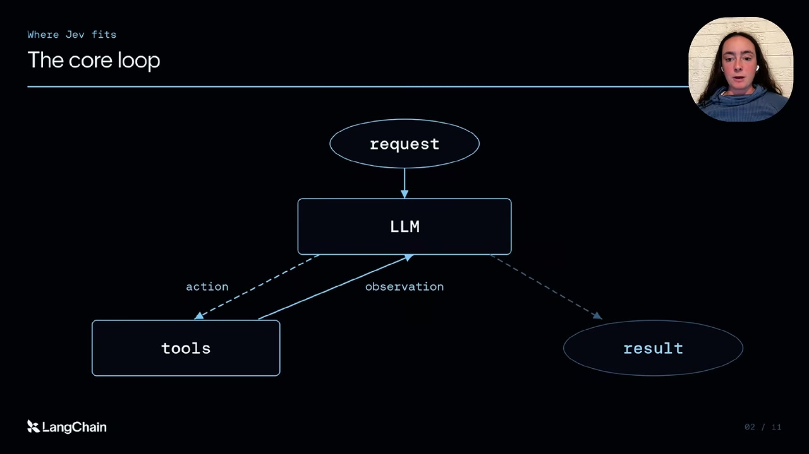
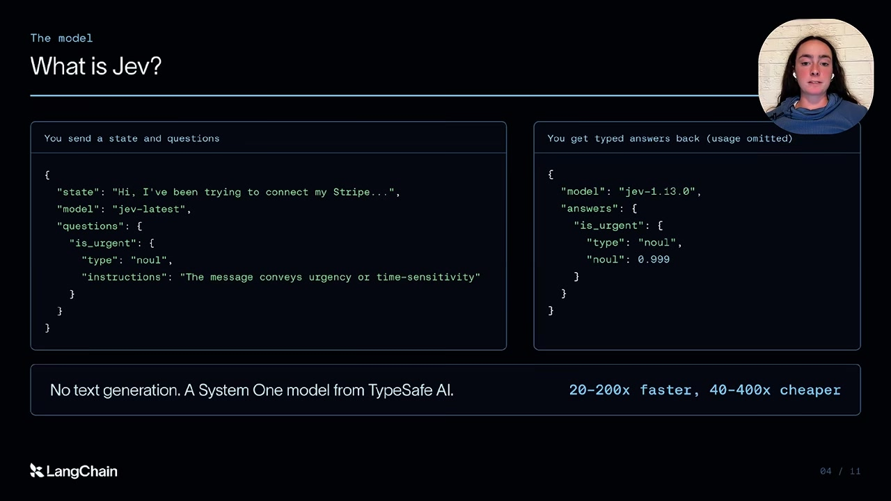
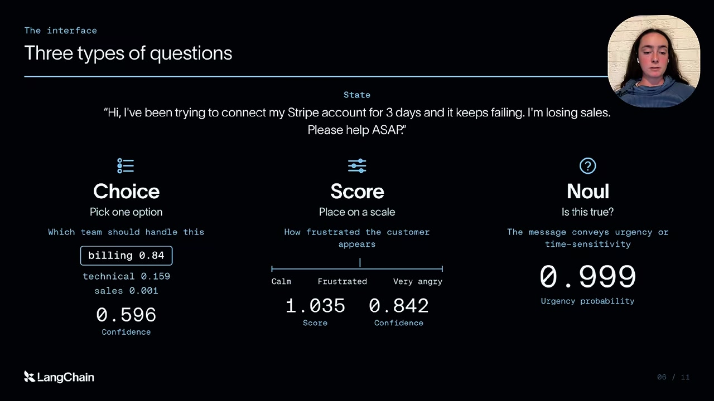
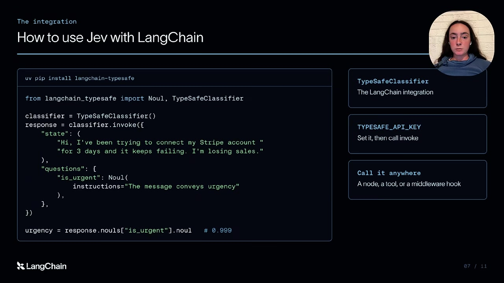
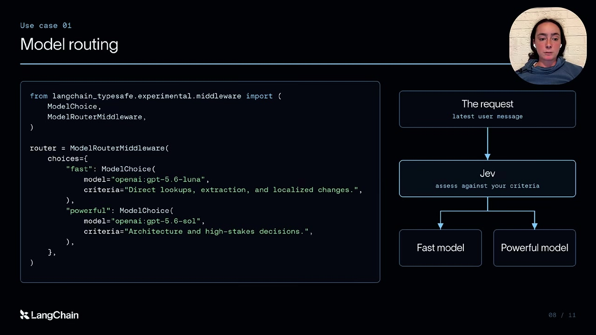
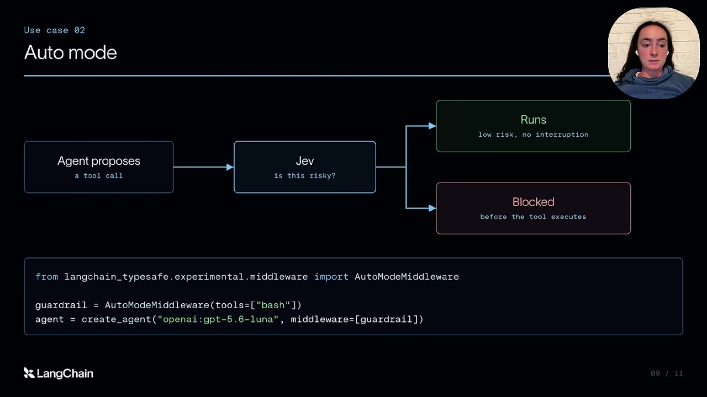
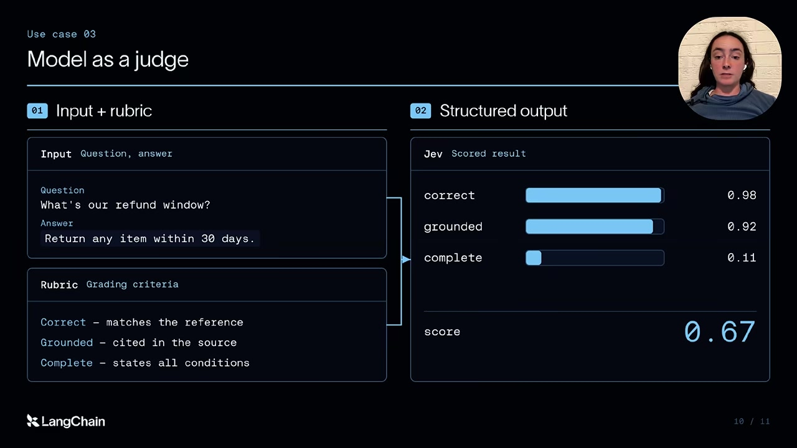

Building a Harness with Jev
mindmap
root((Building a harness with Jev))
Agent loop
Tool calls request actions
Structured outputs shape answers
Typed decisions
State and named questions
Choice selects a category
Score uses an ordered scale
Boolean returns a probability
LangChain integration
TypeSafeClassifier
One state with multiple questions
Application policy consumes results
Model routing
Assess task complexity
Select the model for the work
Check total cost and quality
Tool risk checks
Inspect before execution
Middleware enforces the policy
Handle uncertainty and failures
Online evaluation
Answer and context plus rubric
Grade distinct criteria
Separate consistency from accuracyTool calling and structured outputs connect the agent loop to software
00:00:00–00:01:38
An agent becomes useful when it can act on a request and inspect the result. Sydney starts with the familiar loop: send a request to a language model, let it request a tool, return the tool's result to the model, and repeat until the model finishes. The surrounding software must represent both requests and results in a form that code can use.
Two interfaces provide that structure:
- Tool calling gives a model a structured way to request an operation. The tutorial uses an order lookup with an identifier as its example.
- Structured outputs constrain the final answer to an expected schema, so downstream code can consume named fields instead of interpreting a prose response.
These interfaces explain the starting point for Jev: some steps inside an agent system ask for a bounded decision, such as a category or an urgency probability. The tutorial explores moving those steps to a model designed for that output. The open-ended language model still drives the main task.
Jev handles bounded decisions without generating a text response
00:01:38–00:04:11
Jev receives a state to examine and questions about that state, then returns typed decisions and probabilities. It does not produce a free-form text response. That makes its role narrower than the language model that writes a solution, explains an answer, or chooses a sequence of actions.
TypeSafe calls this a System 1 model, borrowing the fast-intuition versus deliberate-reasoning analogy from Daniel Kahneman. In this tutorial the label describes an intended division of work; it is not evidence that either kind of model reproduces human cognition.
Sydney reports classification speedups of 20–200 times and cost reductions of 40–400 times relative to LLMs. Those are reported comparisons, not measurements reproduced in this recording. The visible PII example contrasts an LLM response taking about five seconds with Jev quickly returning a probability of 0.98 that personal information is present. That output describes the model's estimate for this example; it does not mean the model has 98% accuracy across a dataset.
The useful architectural idea is to retain generation where the task needs it and use a typed decision interface where the next operation depends on a bounded judgment.
Choice, score, and boolean questions share one input state
00:04:11–00:05:35
The support-ticket example makes the input/output contract concrete. A customer has repeatedly failed to connect a Stripe account, is losing sales, and asks for immediate assistance. The same message supports several different decisions:
| Question | Answer shape | Value described in the demo |
|---|---|---|
| Which team should handle the ticket? | One choice from named alternatives | Billing has 0.84; a separate confidence field is 0.596. |
| How frustrated does the customer seem? | A value on an ordered scale | 1.035, interpreted as frustrated rather than very angry. |
| Does the message convey urgency? | A yes/no probability | 0.999, strongly favoring urgent. |
A score on a frustration scale is not a probability, and the choice confidence is not the same field as the probability assigned to billing. The tutorial shows the values but does not derive the confidence calculation. It also describes the third question as boolean even though the returned number is a probability; application code still needs a rule for turning that estimate into an action.
Multiple questions can accompany one state. This lets the application request routing, urgency, and sentiment information together. Sydney describes efficient parallel evaluation of those questions, rather than making a separate generation call for each one.
The LangChain classifier accepts state and named questions
00:05:35–00:06:00
The integration point is TypeSafeClassifier in langchain-typesafe. An application configures a TypeSafe API key, supplies a state and named questions to the classifier, then reads the answers from the response. It can use those answers in ordinary branching logic or an agent middleware hook.
The data flow is:
- Assemble the context relevant to the decision.
- Define a bounded question and its answer type.
- Invoke the classifier with the state and questions.
- Read the typed result and let application logic choose the next step.
The closing slide gives uv pip install langchain-typesafe as the installation command. The tutorial's important API distinction is that this call returns classification answers rather than a chat message. For executable examples and current field names, consult the official LangChain integration documentation, since the recording captures a newly released integration.
Model routing assigns expensive reasoning only where it is useful
00:06:00–00:06:47
Model routing makes the classification result affect the next expensive operation. Sydney describes coding-agent tasks that range from simple requests to difficult debugging or implementation work. The application can ask Jev to assess the request against chosen complexity criteria, then select an inexpensive model or a more capable one.
This places a decision before the main language-model call: request, complexity assessment, model selection, task execution. The criteria are part of the harness design. A team must decide what evidence in a request justifies the more capable route.
The video presents LangChain's exploration of this pattern without a comparison of complete routed-agent runs. The practical implication is that the classifier's speed is only one part of the result. A router is useful when the combined system preserves acceptable task quality while improving overall cost or latency; a fast decision that sends a difficult task to an unsuitable model can increase retries.
A tool risk check sits between a proposed action and execution
00:06:47–00:07:28
A risk check needs to run after the agent proposes a tool call and before the tool produces side effects. The tutorial places Jev at that boundary through auto mode middleware: inspect the intended action, classify its risk, and block a call that the policy considers risky. Deleting a database or important files is the motivating example.
Sydney reports disabling an earlier risk-classification step because it made her coding agent feel slow, then enabling it again when Jev reduced the delay. This illustrates why the latency of repeated checks can affect whether developers keep them in their workflow. It is a personal observation, not a measured safety evaluation.
The classifier provides evidence for an enforcement decision; the runtime performs the blocking. The example should therefore be read as a design pattern, not a guarantee that every destructive command will be recognized. An implementation needs a defined policy for ambiguous results and failed checks as well as clear boundaries around the tools it can execute.
Online evaluation applies a rubric to an agent answer
00:07:28–00:09:09
Online evaluation asks whether an agent's output meets a rubric. In the tutorial, the evaluator receives the original question and agent answer, together with criteria such as correctness, agreement with a reference, grounding, and whether a source was cited. These are distinct questions: the presence of a citation alone does not establish that the citation supports the answer.
Sydney motivates this with the limits of reviewing every production trace manually and the expense of using a generative language model as the judge. A fast classifier can make it practical to inspect more traces or apply more criteria to each one. Code-based checks remain useful where the property can be verified directly.
She points to a separate LangChain evaluation for claims about cost, speed, reliability, and consistency. This recording does not establish the experiment's dataset, sample size, or generality. Repeatedly returning the same judgment and agreeing with an expert are different properties, so both matter when assessing a judge.
The tutorial closes with the package installation command, a link to the companion blog, and instructions to obtain a TypeSafe API key. Its three applications all share the same pattern: expose a bounded decision inside the harness, give that decision a typed interface, and let runtime code act on the result.